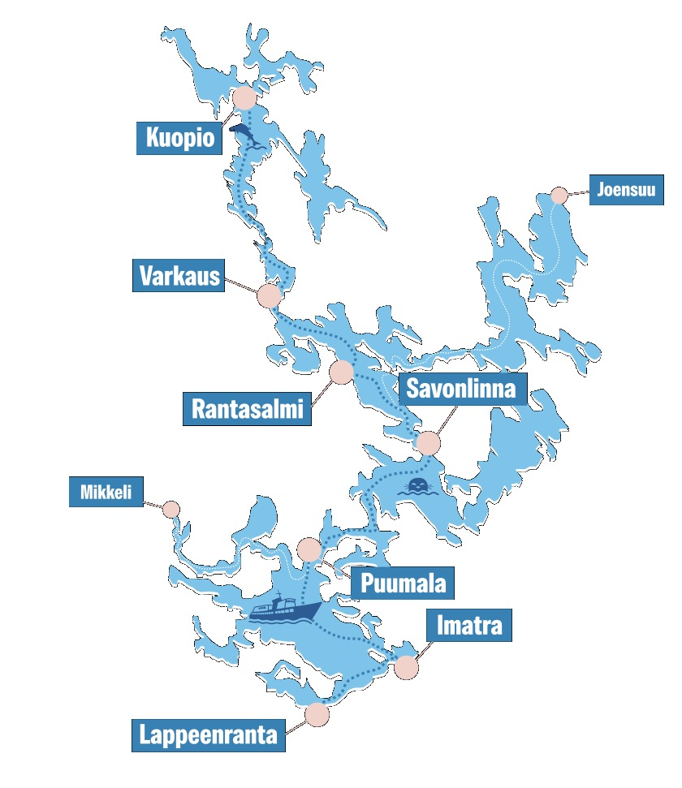

Lakeland Finland
Where 188,000 Lakes Meet Nordic Luxury
Where 188,000 Lakes Meet Nordic Luxury
Europe's largest lake district, where pristine water, ancient forests, and the silence of nature create the ultimate escape. A landscape shaped by the Ice Age, perfected by Finnish hospitality.
In the heart of Saimaa — Finland's most celebrated lake region — Järvisydän is a full-service resort offering world-class accommodation, an award-winning cave spa, top-10 dining, and a complete range of lakeland activities.
From glass-roofed Scenery Suites to lakeside Kuru Lake Suites and floating houseboats, every room type frames the water and forest. The resort serves as our Lakeland hub, with all experiences and excursions departing from one beautiful location.
Järvisydän is the home base for all our Lakeland programs — from intimate couples' retreats to incentive groups of 200.

The Finnish Lakeland is easily accessible year-round. Multiple airports and excellent road connections make Järvisydän reachable within hours of arrival in Finland.
Season: May – October (summer), November – March (winter lakeland)
We arrange all transfers, airport meet-and-greet, and scenic route planning.
Scenery Suites — Finland's answer to the glass igloo. Panoramic glass roof and floor-to-ceiling windows frame the lake and forest from your bed. The glass roof experience tourists dream about — in a full-size luxury suite, not a capsule.
Kota Hotel — Motorized glass roofs open to reveal the night sky and the Northern Lights. Dark luxury suites with lake panoramas and private terraces.
Premium suites at the Kuru resort area, steps from the award-winning restaurant. Contemporary Finnish design, private lake views, and the quietest corner of the resort.
Floor-to-ceiling panoramic windows framing the lake from your bed. Private sauna, spacious living area, and direct nature access. For guests who want fine dining at their doorstep and silence everywhere else.
Summer, autumn & winter activities on Europe's largest lake
Voted Best Spa in Finland multiple times, Järvisydän's wellness offering is built around the unique combination of underground stone and open lake.
Cave Spa — Finland's first cave spa, carved into natural rock. Turquoise pools, log-and-stone architecture, and an atmosphere unlike any other wellness space in the Nordics.
Lake Spa — Heated outdoor pools overlooking Saimaa, traditional smoke sauna, cold plunge pools, and peat treatments using local ingredients. A holistic journey from underground stone to open sky.
Solitary by Kuru — Top 10 restaurant in Finland. An intimate dining concept where the chef, the ingredients, and the landscape are all within arm's reach. The ultimate Saimaa culinary experience.
Restaurant Kuru — Fine dining rooted in the Saimaa terroir. Seasonal menus from local fish, wild game, forest berries, and hand-foraged ingredients.
Kota Restaurant Savonloitsu — The resort's iconic teepee restaurant. Open-flame cooking under a traditional kota roof, smoked meats, and Finnish campfire cuisine in an unforgettable atmosphere.
M/S Puijo Dining Cruise — A floating restaurant on the historic Saimaa waterway. Multi-course dinner as islands and forests glide past.
Flexible programs tailored to your clients — from weekend escapes to full lake journeys
Prices are indicative and vary by season, group size, and accommodation choice. Full custom quotations on request.
Järvisydän is your base, but the Saimaa region is home to a collection of authentic boutique resorts and experiences that no booking engine can offer. As your local DMC, we open doors others can't.
Sahanlahti Resort — Intimate lakeside retreat with private villas, own vineyard, and farm-to-table dining. The hidden pearl of Saimaa.
Anttolanhovi — Art & design hotel on its own peninsula. Lakeside art villas, wellness centre, and contemporary Finnish art exhibitions.
Linnansaari National Park — Pristine islands by boat only. Home to the endangered Saimaa ringed seal.
Savonlinna & Olavinlinna — Medieval castle, world-famous opera festival, charming lakeside town.
This is why you need a DMC — we know every hidden corner personally.
Signature experiences across the lake region
We know hospitality.
Finland DMC is a specialist destination management company covering all of Finland — from the thousand lakes of Saimaa to the Arctic wilderness of Lapland and the design capital Helsinki.
We craft seamless, end-to-end travel experiences for international tour operators. Accommodation, dining, activities, transfers — we bring every element together into one memorable journey.